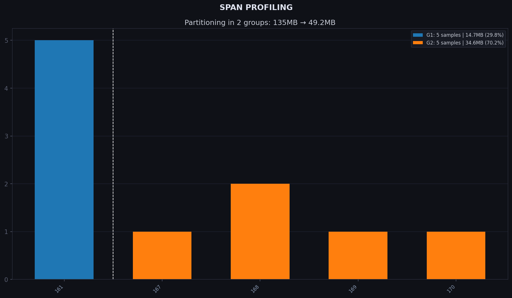

Step-by-step: list → profile → compose → plan → apply
This page is a companion to the E. coli tutorial. It assumes you have already followed the main steps and are looking for a deeper understanding of what each sub-command does, or want to run stages individually to inspect or re-run a specific part of the pipeline.
design
The three steps below are equivalent to Step 3 of the tutorial.
Step 3.1 — Scan samples and count k-mers (list)
I/O
Input: coli_10.txt
Output: coli_db/list/coli.jsonl
INFO
list reads each path, counts k-mers with ntcard (k = 25), and writes one
JSONL record per sample to coli_db/list/coli.jsonl.
RESULT
The header line records the shared parameters; every subsequent line is one sample:
{"description": "Generated by kmhelpers list", "date": "2026-06-29T12:58:33.254120", "root_path": "/root_path", "k": 25, "assembled": true, "abundance_min": 1}
{"name": "GCA_000780515_1_ASM78051v1_genomic_fna", "files": ["/home/sbelleno/work/data/tuto_kmhelpers_v2/coli_dataset/GCA_000780515.1_ASM78051v1_genomic.fna.gz"], "kmer_count": 10898876}
{"name": "GCA_001076125_1_ASM107612v1_genomic_fna", "files": ["/home/sbelleno/work/data/tuto_kmhelpers_v2/coli_dataset/GCA_001076125.1_ASM107612v1_genomic.fna.gz"], "kmer_count": 10180102}
...
Step 3.2 — Profile the k-mer distribution (profile)
I/O
Input: coli_db/list/coli.jsonl
Output: coli_db/profile/profile.yaml, coli_db/profile/groups.png
INFO
A span is an integer bucket that summarises a sample's k-mer count:
where \(n\) is the sample's distinct k-mer count. All samples whose k-mer count falls in the same bucket \([\text{base}^s,\, \text{base}^{s+1})\) share span \(s\) and are indexed together in one sub-index.
The Bloom filter allocated for that sub-index is sized for the worst case of the bucket — the maximum k-mer count \(\text{base}^{s+1}\) — so every sample in the span fits:
\(p\) is the false-positive rate (default 0.25) and the \(\times 8\) rounding aligns the size to a byte boundary.
False-positive rate and findere
A higher \(p\) reduces Bloom-filter size and therefore disk footprint, at the cost of more false positives. At query time the findere algorithm compensates by querying \((k+z)\)-mers instead of \(k\)-mers, reducing the effective false-positive rate to \(p^z\):
Recommended settings: build with --fp 0.25 (default), query with
-z 6 (default), giving \(0.25^6 \approx 0.024\,\%\) effective FP rate.
Lucas Robidou and Pierre Peterlongo. findere: fast and precise approximate membership query. SPIRE 2021, Springer, pp. 151–163. https://doi.org/10.1007/978-3-030-86692-1_13
Choosing base and the number of groups
base controls bucket width. With base=2.0 (default) each bucket spans
a 2× range of k-mer counts, producing few coarse spans. -b 1.1 narrows
each bucket to a 10 % range, giving finer resolution at the cost of more
spans. -g 2 then requests that those spans be merged into 2 groups.
For a dataset this small and uniform, -g 1 (a single group) would
actually be the optimal choice; we use -g 2 here to illustrate how
grouping works — pick a value that fits your own distribution.
RESULT
profile writes three output files to coli_profile/:
profile.yaml
Records global parameters and one named profile per grouping. The baseline
profile preserves the natural 5-span distribution; 2_groups merges them into
two sub-indices:
false_positive_rate: 0.25
span_base: 1.1
sample_count: 10
biggest_sample: ('GCA_000780515_1_ASM78051v1', 10898876)
max_kmer_count: 11971516
default_profile: 2_groups
profiles:
baseline:
span_list: [161, 167, 168, 169, 170]
bloom_size: [14649392, 25952288, 28547520, 31402272, 34542496]
sample_dist: [5, 1, 2, 1, 1]
disk_usage: [1.47e+07B, 2.6e+07B, 2.86e+07B, 3.14e+07B, 3.46e+07B]
size_ratio: ['0.109', '0.192', '0.211', '0.232', '0.256']
total_size: 1.35e+08B
bytes_per_sample: 1.35e+07B
2_groups:
span_list: [161, 170]
bloom_size: [14649392, 34542496]
sample_dist: [5, 5]
disk_usage: [1.47e+07B, 3.46e+07B]
size_ratio: ['0.298', '0.702']
total_size: 4.92e+07B
bytes_per_sample: 4.92e+06B
groups.png
A plot showing the k-mer count distribution, natural span boundaries, and the requested 2-group overlay.
Grouping affects both storage and query performance.
Storage
kmindex stores samples in packs of 8 (bit-packing), so a
sub-index with 1 sample occupies the same disk space as one with 8. In the
baseline profile, spans 167, 169 and 170 hold only 1–2 samples each —
those near-empty packs waste most of their allocated space, bringing the
total to 135 MB. In this case, merging the 5 sub-indices into 2 reduces
the number of packs from 5 to 2 (one per group), cutting the total to
50 MB.
Query time
Each sub-index is composed of multiple partition files
(kmindex terminology). Query performance on large datasets is dominated by
disk latency rather than CPU, so every sub-index multiplies the number of
partitions that must be opened and read. Fewer sub-indices means fewer
partition files accessed per query, directly reducing that latency overhead.

Step 3.3 — Compose index definitions (compose)
kmhelpers compose coli_db/list/coli.jsonl \
-o coli_db/compose/ \
-n coli \
-S initial \
-pf coli_db/profile/profile.yaml
I/O
Input: coli_db/list/coli.jsonl, coli_db/profile/profile.yaml
Output: coli_db/compose/coli/initial/, with coli.yaml as the entry point
INFO
compose reads the sample list and the profile, then writes index definition
files into coli_db/compose/coli/initial/. Pass the coli.yaml file in that
directory to plan, build or apply in the next step. The sample-to-sub-index
repartition is driven by the selected profile — here 2_groups, the default set
by profile — whose Bloom-filter sizes are read from coli_db/profile/profile.yaml.
build
The two steps below are equivalent to Step 4 of the tutorial.
Step 4.1 — Preview the build plan (plan)
I/O
Input: coli_db/compose/coli/initial/coli.yaml
Output: coli_build/assets/kmhelpers_apply.sh + validation report in coli_build/logs/
INFO
Before committing to a potentially long build, validate paths and preview the commands that will be executed: plan checks that every sample file exists, reports any missing paths, and
prints the equivalent kmindex commands — without running them. Fix any path
errors now rather than discovering them mid-build.
RESULT
Validation report in coli_build/logs/
input_file-- path to thecoli.yamlused as inputkmindex/kmhelpers-- tool versions detected at runtimespan-- one entry per sub-index: sample count and estimated disk sizerun-- validation result (SUCCESS/FAILURE) per sub-index
Build script coli_build/assets/kmhelpers_apply.sh
One kmindex build call per sub-index (coli_g0, coli_g1), with Bloom-filter
size, k-mer size, and output paths pre-filled from the profile.
Step 4.2 — Build the index (apply or bash)
I/O
Input: coli_db/compose/coli/initial/coli.yaml
Output: coli_build/index.json + sub-index data files in coli_build/kmindex_data/ — ready-to-query index
RESULT
Once complete, the index is registered in coli_build/index.json and ready to query.